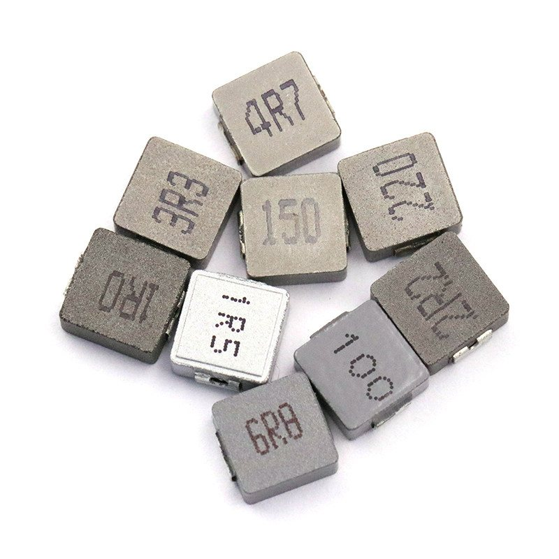

电感与磁珠：三个电流参数决定生死
电容看电压，电感看电流。规格书上「4.7µH」只说明它在小信号下的感值，真正决定能不能用的是饱和电流 Isat、温升电流 Irms、直流电阻 DCR。选错任何一个，DCDC 会在满载瞬间掉压、发烫，甚至烧穿。这一章从 V=L·di/dt 推起，把三个参数、纹波公式、磁珠与电感的区别一起算清。

读完这一章，你应该能
- 用 V=L·di/dt 推出 DCDC 的纹波电流公式，并据此选感值
- 区分 Isat 与 Irms，说出各自对应的失效模式与余量
- 用 DCR 算铜损，判断一颗电感的发热是否可接受
- 解释磁珠为什么「直流是短路、高频是电阻」，以及它不能替代电感
- 用 LCR 表/电流探头/热像仪三步验证一颗电感是否选对
2.3.1从 V=L·di/dt 开始：电感的「惯性」
电感的定义式是：
V = L · di/dt ⇔ ΔI = V·Δt / L
含义：电感两端的电压决定电流变化的速度，而不是电流的大小。给定电压、给定时间，ΔI 由 L 决定——L 越大，电流爬得越慢。这就是「电感阻碍电流变化」的数学形式。
储能：E=½LI²。4.7µH 在 2A 时储 9.4µJ；这也是为什么电感体积与电流平方成正比——能量要存在磁场里。
把定义式套进降压 DCDC：开关导通时电感接 Vin−Vout，关断时接 −Vout。导通时间 ton=D/fs，D=Vout/Vin。代入得：
ΔI = Vout(Vin−Vout) / (L·fs·Vin)
这个公式要背下来：纹波电流与感值、开关频率成反比，与占空比×压差成正比。
2.3.2算例：4.7µH 在 12V→5V 上够不够
假设 U6（DCJW5060 系列）工作在 500kHz 量级，输入 12V、输出 5V、负载 1A：
- D=5/12=0.417
- ΔI=5×(12−5)/(4.7µH×500kHz×12)=35/28.2≈1.24A
- 峰值 Ipeak=1+1.24/2≈1.62A；谷值 0.38A（仍在 CCM）
1.24A 的纹波相对 1A 负载是 124%，偏大——输出纹波会跟着变大（ΔV≈ΔI×ESRC）。若把感值提到 10µH，纹波降到 0.58A，代价是体积与 DCR。工程折中是 ΔI≈0.2–0.4×Iout，按这个标准 4.7µH 更适合 3A 级负载或更高开关频率。
这也解释了一个常见现象：轻载时 DCDC 进入 DCM（电流降到 0 后反向被二极管/同步管阻断），纹波形状变成「三角+平台」，输出电压略升。不是故障。
2.3.3三个电流参数：各自管一种死法
| 参数 | 定义 | 超了会怎样 | 余量 |
|---|---|---|---|
| Isat | 感值跌到标称 70–80% 时的直流电流 | 磁芯饱和→感值骤降→电流失控上升→过流保护/烧管 | Ipeak≤0.7×Isat |
| Irms（Iheat） | 温升到规定值（常 40°C）的有效电流 | 长期过热→绝缘老化、焊点疲劳、磁芯开裂 | Irms≤0.8×额定 |
| DCR | 绕线直流电阻（20–80mΩ 常见） | 铜损 I²·DCR，效率掉、局部烫 | 按效率目标反算 |
最容易混的是 Isat 与 Irms：前者是「磁」的极限（瞬时峰值），后者是「热」的极限（长期有效值）。一个 2A 的电感，可能 Isat=3A 但 Irms 只有 1.5A——你能过 3A 的尖峰，但不能长期跑 2A。
算例：L1 4.7µH、DCR 45mΩ，输出 2A：PCu=2²×0.045=0.18W。这颗电感的表面积约 6×6mm，热阻约 30°C/W，温升≈5°C——可接受。若 DCR 是 150mΩ，铜损 0.6W，温升 18°C，加上环境 60°C 就到 78°C，接近磁芯 Curie 温度余量。
2.3.4磁珠：它其实是一只「频率相关的电阻」
磁珠（ferrite bead）常被画成电感符号，但它的工作机理完全不同：低频近似短路（只呈现 DCR），高频呈现电阻性阻抗，把噪声变成热。规格书给的是「某频率下的阻抗」，如本板以太网电源上的 L3 = 220R@100MHz。
| 器件 | 低频 | 高频 | 用途 |
|---|---|---|---|
| 功率电感 | 储能、限纹波 | 寄生电容使其在 SRF 后失效 | DCDC 输出 |
| 磁珠 | 几 mΩ–几十 mΩ | 几十–几百 Ω（阻性） | 电源/信号噪声隔离 |
| 共模扼流圈 | 差模低阻 | 共模高阻 | USB/以太网/ CAN |
磁珠不能当电感用：它没有饱和电流规格（只有额定电流），也不适合储能。反过来，电感也不能当磁珠用——它的高频阻抗是「电容性」的，可能在某个频点与去耦电容形成谐振，反而放大噪声。
本板 L3 220R@100MHz + C13 10µF 组成以太网 PHY 的电源滤波：磁珠挡高频、电容给本地电荷。这是「π 型」滤波的一半（另一半是 PHY 内部的 LDO）。若把磁珠换成 0Ω，百兆以太网的误码率会明显变差——但只在长线、干扰强的现场才暴露。
2.3.5选型五步
- 定纹波：先按 ΔI=0.2–0.4×Iout 反算 L，再选最近的标称值（1.0/1.5/2.2/3.3/4.7/6.8/10µH）。
- 定峰值：Ipeak=Iout+ΔI/2，必须 ≤0.7×Isat；瞬态（负载跳变）还要留额外余量。
- 定热：Irms≈Iout（CCM 下近似），额定 Irms 要 ≥1.25×。
- 定损耗：PCu=I²·DCR，加上磁芯损耗（与 fs、ΔB 有关），估算温升。
- 定尺寸/屏蔽：靠近晶振、ADC、无线模块时选屏蔽型；否则漏磁会耦合进高阻节点。
本板对照：L2 2.2µH 服务 1.35V DDR 轨，电流大、电压低 → 感值小、Isat 大；L1/L3 4.7µH 服务 5V/3.3V 小电流轨 → 感值大、纹波小。这不是随意取值，而是「电压比与电流」共同决定的结果。
2.3.6怎么测：三步验证
- LCR 表：拆下测感值（100kHz 档），与标称对比；顺带测 DCR（直流电阻档），偏高说明绕线虚焊或受潮。
- 电流探头/分流电阻：看实际峰值是否逼近 Isat。波形顶部变「圆」或斜率变陡，就是饱和的开始。
- 热像仪/点温：满载 10 分钟后测本体温度。超过 80°C 要重新核 Irms 与 DCR。
一个实用判据：DCDC 满载时若听到「吱吱」声，多半是电感在磁致伸缩（或陶瓷电容在唱歌），说明纹波/机械应力偏大，不是「正常现象」。
五个坑
① 只看感值不看 Isat：满载时感值塌到 1/3，纹波翻倍、管流过流。
② 拿 Isat 当持续电流：Isat 是瞬时峰值，长期跑会过热。
③ 磁珠当电感储能：没有 Isat 规格，饱和后阻抗崩塌。
④ 用非屏蔽电感靠近晶振：漏磁耦合，频偏偏移、相噪变差。
⑤ 忽略 DCR 的温升：45mΩ×2A 只有 0.18W，但 200mΩ 就是 0.8W。